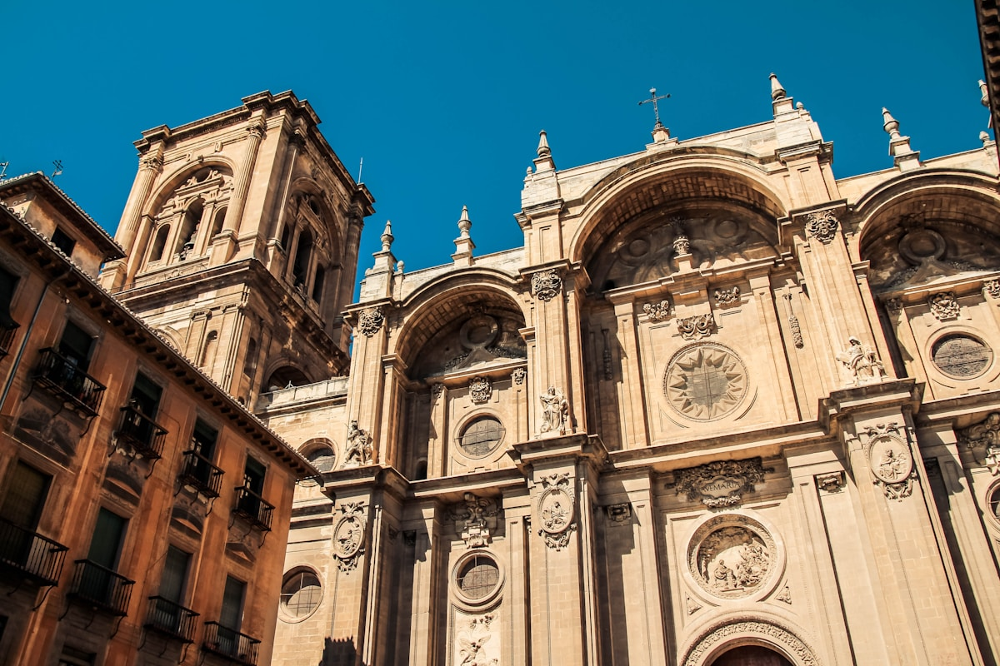
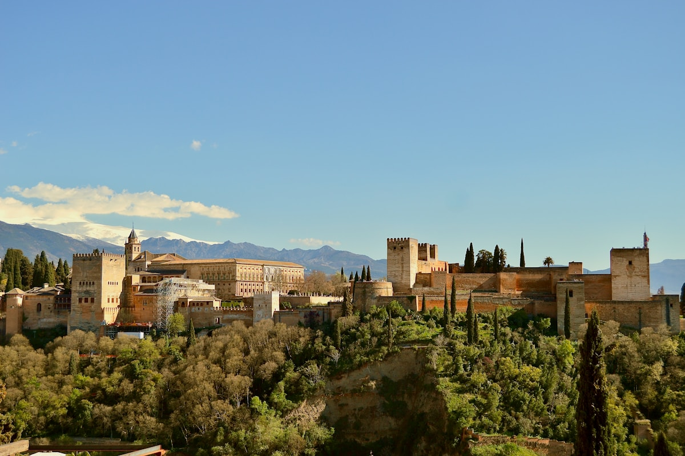
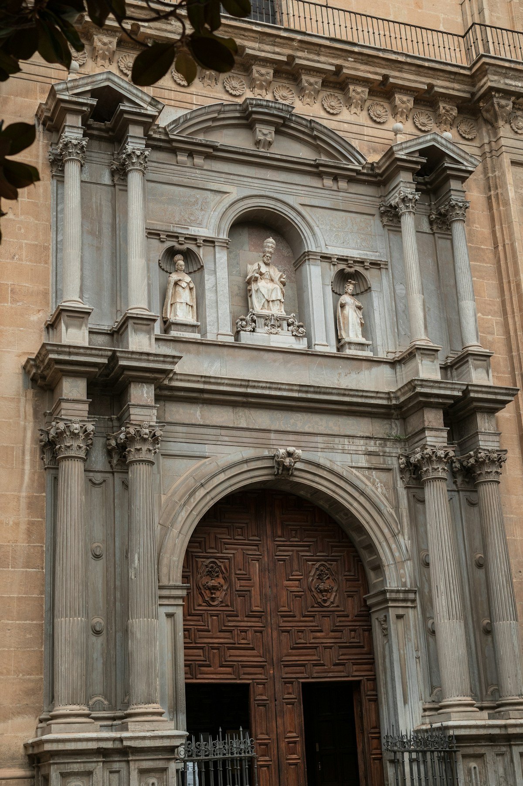

精选景点
La Alhambra
UNESCO世界遗产，伊斯兰建筑在西方的巅峰之作，西班牙参观人数最多的景点。纳斯里德宫的几何灰泥雕花精细至令人窒息，狮子庭院的12只大理石雄狮守护着最私密的宫廷空间，赫内拉利费花园的流水系统融合了伊斯兰园林艺术的精髓。赭红色城墙在内华达山雪峰的映衬下构成格拉纳达最永恒的天际线。
纳斯里德宫分时入场，错过预定时段不得入内；门票类型较多，全宫殿参观买 Alhambra General；夜间场另需单独购票
入场方式：必须携带护照，票面实名制，入场须核验身份证件

Catedral de Granada
16世纪西班牙文艺复兴最重要的建筑成就之一，建造历时182年。正立面由阿隆索·卡诺设计，在恢弘的哥特结构内填入了文艺复兴式圆柱和古典装饰，这种"罗马式"风格在伊比利亚半岛独树一帜。毗邻的王室礼拜堂安葬着天主教双王伊莎贝拉与斐迪南，是收复失地运动的精神终点。
可现场购票；与王室礼拜堂联票更划算；内部禁止拍照；步行可达阿尔拜辛老城
入场方式：现场购票或电子票均可，无需护照

Mirador de San Nicolás
格拉纳达最经典的观景点，阿尔拜辛区白色山丘上的传奇广场。站在这里，阿尔罕布拉宫全貌在眼前铺展——红色城墙、纳斯里德宫塔楼、远处内华达山脉雪峰尽收眼底。日落时夕阳将宫殿染成金红色，广场边街头音乐人弗拉门戈旋律随风飘来，被无数旅人誉为"世界最美日落之一"。
日落前1小时到达占位；上山有两条路，建议从阿尔拜辛区步行穿越白色老街上山；小心扒手
入场方式：免费参观，无需门票

Basílica de San Juan de Dios
格拉纳达最华丽的巴洛克教堂，18世纪建成。主祭坛是西班牙巴洛克装饰艺术的极致——镀金雕塑层层叠叠，圣胡安迪奥斯圣徒的遗骨供奉其中，银光与金光交相辉映，奢华程度令初见者目瞪口呆。与格拉纳达大教堂的宏伟外观相比，这里展示的是伊比利亚半岛内部装饰的不同美学。
有官方语音讲解；注意午休关门时段（约14:00-16:00）；教堂不大，参观约30分钟
入场方式：现场购票，无需护照
交通指南
格拉纳达有直达AVE线路，阿托查站出发约3h50。也可在安特克拉换乘，连接塞维利亚与马拉加方向。越早购票越便宜。
马德里 ~3h50 · 安特克拉换乘格拉纳达大巴总站连接安达卢西亚各城市。从塞维利亚约3小时，从科尔多瓦约2h30，票价实惠，班次密集，是安达卢西亚城市间最常用的交通方式。
塞维利亚 ~3h · 科尔多瓦 ~2h30格拉纳达-哈恩机场（GRX）较小，航班有限。马拉加机场（AGP）是最近的大型国际机场，距格拉纳达约130km，可乘巴士约1h30抵达。
马拉加机场接驳 ~1h30旅行贴士
至少提前2个月在官网购票，票面实名制须携带护照入场。门票类型较多，购买"Alhambra General"最完整。旺季常售罄，购票即行程确认第一步。
圣尼古拉斯观景台日落前1小时需提前占位，全年最热门观景点。夕阳将阿尔罕布拉宫染成金红色，广场边弗拉门戈旋律随风飘来，是格拉纳达最令人难忘的时刻。
格拉纳达是西班牙极少数点饮料赠送免费Tapas的城市。点一杯啤酒或饮料，厨房会自动送上一份小食，越喝越多越丰盛，是当地最受中国游客喜爱的美食体验。
阿尔拜辛区山坡上的Zambra洞穴弗拉门戈表演是格拉纳达独有体验。古普赛人在石灰岩洞穴中的演出，氛围原始而震撼，与剧场式演出截然不同。
3-5月和9-11月最宜游览，气候舒适且内华达山头仍有积雪。6-8月极度炎热（最高可达40°C），但阿尔罕布拉宫内有阴凉，夜间场是夏季特别体验。
C3路公交从大教堂广场直达阿尔罕布拉宫，单程€1.4，班次约15分钟一班，省得步行上坡。返程C3或C4均可，或步行下山穿越花园，景色更佳。